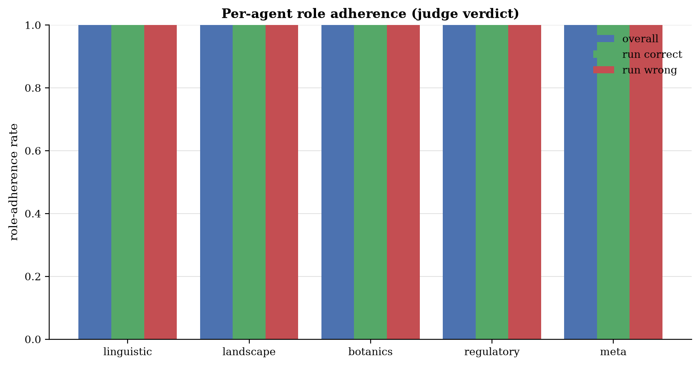
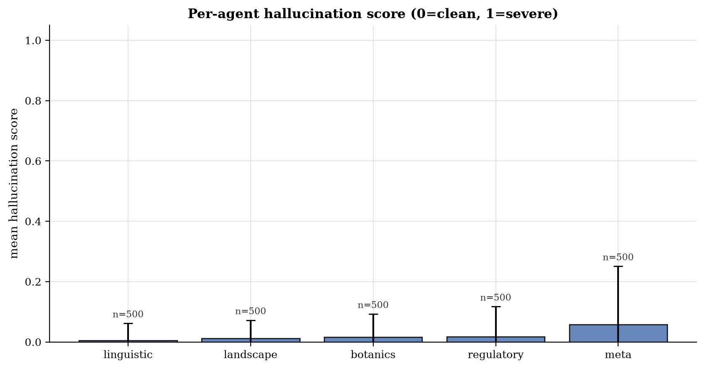
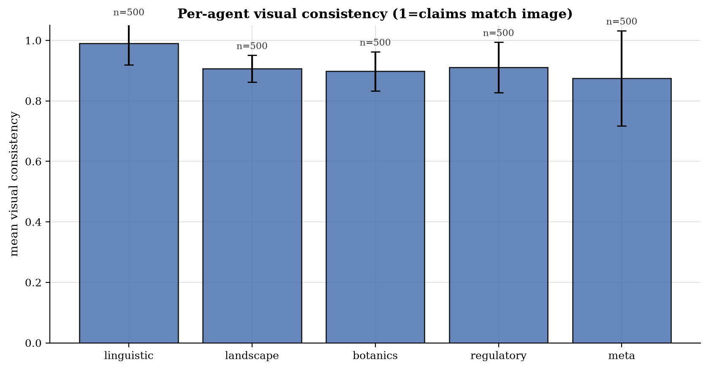
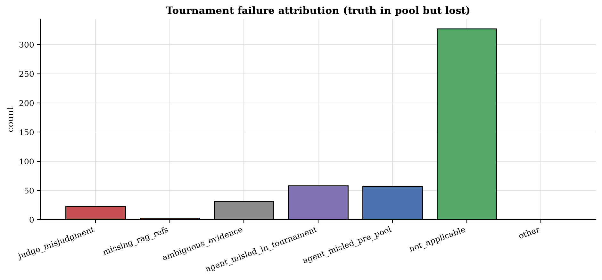

VLM Council v12 - Evaluation Report
LLM-as-judge verdicts (v2)
Verdicts: 500 / 500 · Constructive synthesis: 100.0% (n=500)
Per-agent quantitative scores
| Agent | n | Role adher. | Hallucination ↓ | Visual cons. ↑ | Calibration ↑ |
|---|---|---|---|---|---|
| linguistic | 500 | 100.0% | 0.01 ± 0.06 | 0.99 ± 0.07 | 0.57 ± 0.19 |
| landscape | 500 | 100.0% | 0.01 ± 0.06 | 0.91 ± 0.04 | 0.68 ± 0.28 |
| botanics | 500 | 100.0% | 0.02 ± 0.08 | 0.90 ± 0.07 | 0.66 ± 0.26 |
| regulatory | 500 | 100.0% | 0.02 ± 0.10 | 0.91 ± 0.08 | 0.64 ± 0.26 |
| meta | 500 | 100.0% | 0.06 ± 0.19 | 0.87 ± 0.16 | 0.68 ± 0.31 |

Figure 14: Per-agent role adherence rate.

Figure 15: Per-agent mean hallucination score (0 = clean, 1 = severe).

Figure 16: Per-agent mean visual consistency.
Tournament failure attribution
For matches where the truth was in the candidate pool but did not win, the judge classifies why. Counterfactual winnable rate: 26.6% (173 attributable losses).
| Failure reason | Count |
|---|---|
| agent_misled_in_tournament | 58 |
| ambiguous_evidence | 32 |
| not_applicable | 327 |
| judge_misjudgment | 23 |
| agent_misled_pre_pool | 57 |
| missing_rag_refs | 3 |

Figure 17: Tournament failure attribution histogram.
Failure examples (20)
1NJsXTxIF9GGMDxC_1 -> agent_misled_in_tournament (lost to Azerbaijan)
Round: final · Counterfactual winnable: yes
The meta and regulatory agents hallucinated a strong link between the green totem and Azerbaijan (SOCAR), assigning 'strongly_support' to Azerbaijan while giving only 'support' to Kyrgyzstan. This misleading evidence caused the tournament to discard the correct country.
1NJsXTxIF9GGMDxC_2 -> agent_misled_in_tournament (lost to Taiwan)
Round: final · Counterfactual winnable: no
The specialists collectively hallucinated that the visible infrastructure (concrete gutters, guardrails) was a unique signature of Taiwan/Japan, assigning 'strongly_support' to Taiwan and 'support' to Japan while giving 'low' confidence to Malaysia (which was in the pool). This misleading evidence set the tournament up to fail, as the judge had no basis to prefer the correct country (Malaysia) over the incorrect one (Taiwan).
1NJsXTxIF9GGMDxC_3 -> ambiguous_evidence (lost to Bosnia and Herzegovina)
Round: final · Counterfactual winnable: no
The image features generic socialist-era architecture and standard European signage common to both Serbia and Bosnia. The agents correctly identified both as candidates but lacked specific visual differentiators (like unique text or distinct landmarks). The final decision was based on 'meta' cues (camera artifacts, building colors) which are ambiguous and insufficient to definitively rule out the ground truth.
2xnQdwiCve2rHWVt_1 -> judge_misjudgment (lost to Brazil)
Round: final · Counterfactual winnable: yes
The specialists unanimously and strongly supported Thailand (the truth) based on clear visual evidence (utility poles, vegetation). The judge ignored this overwhelming consensus and hallucinated a win for Brazil, which was explicitly contradicted by the regulatory and meta agents.
3I4ZtihbhZy5qZzQ_1 -> judge_misjudgment (lost to India)
Round: final · Counterfactual winnable: yes
The truth (Bangladesh) and the winner (India) were visually indistinguishable based on the provided evidence (landscape, botanics, regulatory). The meta-agent provided weak evidence favoring India based on 'image quality' and 'pole style' which are not reliable differentiators. The judge accepted this weak signal over the neutral/indistinguishable signal for Bangladesh, resulting in a misjudgment.
3I4ZtihbhZy5qZzQ_5 -> agent_misled_in_tournament (lost to Colombia)
Round: final · Counterfactual winnable: yes
The meta agent hallucinated a specific camera hood artifact ('grey/silver color... characteristic of Colombia') that was not visible in the image. This fabricated evidence was treated as a 'strongly_support' signal by the tournament judge, overriding the generic but accurate evidence for Panama.
3OuVMcpGjmm0tVfG_1 -> agent_misled_in_tournament (lost to Philippines)
Round: semi-1 · Counterfactual winnable: yes
The landscape agent assigned 'strongly_support' to the Philippines based on a specific, likely hallucinated claim about volcanic rock embankments being characteristic of the Philippines, while giving only 'support' to Indonesia. This biased the tournament judge to pick the wrong country.
3OuVMcpGjmm0tVfG_5 -> agent_misled_pre_pool (lost to Mexico)
Round: final · Counterfactual winnable: no
Argentina was not included in the candidate pool.
3uP6lYo9pzx5Q0km_2 -> judge_misjudgment (lost to Sweden)
Round: final · Counterfactual winnable: yes
The specialists provided comparable support for both Sweden and Norway (both 'support' or 'strongly_support'). The judge selected Sweden based on the claim that the terrain is 'more gently rolling than typical Norwegian landscapes,' which is a subjective visual judgment that contradicts the reality that such terrain is common in Norway. The judge had sufficient evidence to be uncertain but made a definitive, incorrect choice.
3uP6lYo9pzx5Q0km_4 -> judge_misjudgment (lost to Thailand)
Round: semi-1 · Counterfactual winnable: yes
The truth (Indonesia) and the winner (Thailand) were visually indistinguishable based on the provided evidence. The judge's reasoning ('slightly more typical of Thai rural infrastructure') was a subjective preference rather than a deduction from the image, as the specialists had rated both countries as 'support' with no decisive differentiator.
3uP6lYo9pzx5Q0km_5 -> agent_misled_pre_pool (lost to Romania)
Round: final · Counterfactual winnable: no
Montenegro was not in the candidate pool for the final tournament.
4UvmdTHySo6AXW4M_1 -> agent_misled_pre_pool (lost to United Kingdom)
Round: final · Counterfactual winnable: no
Luxembourg was not in the candidate pool. The agents correctly narrowed it to the British Isles/France/Belgium region but could not distinguish Luxembourg from the UK due to visual similarity.
4UvmdTHySo6AXW4M_5 -> agent_misled_in_tournament (lost to India)
Round: final · Counterfactual winnable: no
The landscape and botanics agents assigned 'high' confidence to India/Pakistan and 'low' to Cambodia/Thailand, effectively locking the region decision to South Asia. The meta agent gave Cambodia only 'low' confidence. The specialists collectively misled the judge away from the truth.
56Q4T4rpv9O9sCpP_2 -> ambiguous_evidence (lost to Australia)
Round: final · Counterfactual winnable: no
The image contains strong visual cues (Eucalyptus, red soil, rolling hills) that are ambiguous between Australia and South Africa. The agents correctly identified these features but lacked the specific regulatory or linguistic markers to disambiguate. The 'Eucalyptus = Australia' bias led to high confidence in the wrong country, but the evidence itself was genuinely under-determined.
56Q4T4rpv9O9sCpP_5 -> agent_misled_in_tournament (lost to Botswana)
Round: final · Counterfactual winnable: no
The meta agent hallucinated a 'circular blur' artifact as a specific indicator for Botswana. This false evidence was treated as a 'strong' signal by the tournament judge, overriding the visual reality and leading to the incorrect prediction.
5GS2RPgTrf85UZM5_3 -> agent_misled_pre_pool (lost to Brazil)
Round: final · Counterfactual winnable: no
Bolivia was not in the candidate pool for the final tournament.
5bPlIRT7eGN79a2E_3 -> agent_misled_in_tournament (lost to Argentina)
Round: semi-1 · Counterfactual winnable: yes
The 'meta' agent assigned 'strongly_support' to Argentina based on a hallucinated camera artifact, while assigning 'low' confidence to Mexico. This skewed the region decision and the final tournament bracket, effectively misleading the judge away from the truth.
5bPlIRT7eGN79a2E_5 -> agent_misled_in_tournament (lost to Argentina)
Round: final · Counterfactual winnable: yes
The meta agent hallucinated a specific visual feature (hood shape/color) and falsely associated it with Argentina. This fabricated evidence was weighted heavily in the final tournament, overriding the neutral/ambiguous visual evidence that actually supported Chile.
5l0GTCFZI877KxkV_1 -> agent_misled_in_tournament (lost to Colombia)
Round: semi-1 · Counterfactual winnable: yes
The 'meta' agent assigned 'low' confidence to Mexico and 'strongly_support' to Colombia based on the yellow curbs, despite the landscape agent strongly supporting Mexico. The regulatory agent also shifted to Colombia. The specialists collectively misled the judge away from the truth.
67gLC5CcGgkQIWEW_5 -> agent_misled_in_tournament (lost to Cambodia)
Round: semi-1 · Counterfactual winnable: yes
The meta-agent hallucinated specific diagnostic features (hood shape, pole style) for Cambodia and assigned 'strongly_support' to it while giving 'low' confidence to the Philippines. This biased the tournament setup, causing the judge to pick Cambodia over the truth.
Hallucination examples
linguistic - 5 flagged claims
| Image | Score | Hallucinated claim |
|---|---|---|
| 8Uo6ejwXYqmp9av3_2 | 0.50 | claimed 'MURMESTER' is 'strongly indicative of Denmark' (it is a standard Norwegian term for bricklayer) |
| JnTw9kl2nWPFaoUg_5 | 0.50 | 'Muki' is a common name/word in Luganda, the primary language of Uganda |
| oIqmyQzBGtaIeI84_4 | 0.75 | The text 'SOLGAS' refers to a gas distribution company that operates primarily in Colombia. |
| oIqmyQzBGtaIeI84_4 | 0.75 | The text 'SOLGAS' refers to a well-known LPG gas distribution company operating in Colombia. |
| z2mhsiTu4DYWixQf_5 | 0.75 | The sign on the left contains the word 'سورية' (Syria/Syrian) |
landscape - 5 flagged claims
| Image | Score | Hallucinated claim |
|---|---|---|
| 1NJsXTxIF9GGMDxC_2 | 0.50 | claimed concrete drainage gutters are 'very characteristic of Taiwan's central mountain ranges' (also common in Malaysia/Australia) |
| 3OuVMcpGjmm0tVfG_1 | 0.50 | claimed 'volcanic-looking grey rocky embankments' are 'highly characteristic of the Philippine archipelago' (a specific, unsupported generalization used to bias the decision) |
| 3OuVMcpGjmm0tVfG_1 | 0.50 | claimed 'volcanic rock roadside borders' are 'highly characteristic of the Philippine archipelago' |
| 3uP6lYo9pzx5Q0km_2 | 0.50 | Claimed the terrain is 'more gently rolling than typical Norwegian landscapes' to justify Sweden over Norway; the image shows a gentle slope that is equally characteristic of coastal Norway. |
| 3uP6lYo9pzx5Q0km_2 | 0.50 | Repeatedly cited 'exposed granite outcrops' as a strong indicator for Sweden, whereas the image shows generic rocky outcrops common to both countries. |
botanics - 5 flagged claims
| Image | Score | Hallucinated claim |
|---|---|---|
| 1NJsXTxIF9GGMDxC_2 | 0.50 | claimed fern abundance is 'highly characteristic of Taiwan's central mountain ranges' (generic to humid tropics) |
| 4UvmdTHySo6AXW4M_5 | 0.50 | claimed 'Prosopis juliflora (mesquite)' visible in scrub - not identifiable from image |
| 4UvmdTHySo6AXW4M_5 | 0.50 | claimed 'Triticum aestivum (Winter Wheat)' - crop is too distant to identify species |
| 5l0GTCFZI877KxkV_4 | 0.20 | botanics agent cited 'terraced paddy fields' in Phase 1 evidence; the foreground field appears to be a harvested grassy plot or fallow field, not a flooded paddy. |
| 6ypQOh9cOoE7WaWH_3 | 0.25 | claimed 'eucalyptus plantations' are visible - the background vegetation is generic montane forest/scrub, not clearly identifiable as eucalyptus. |
regulatory - 5 flagged claims
| Image | Score | Hallucinated claim |
|---|---|---|
| 1NJsXTxIF9GGMDxC_1 | 0.50 | The green fuel price totem displays 'AZS', which is the standard abbreviation for Azerbaijan Manat (AZN) fuel stations. |
| 1NJsXTxIF9GGMDxC_2 | 0.75 | claimed concrete drainage gutter style is 'very common in mountainous regions of Taiwan' (implies exclusivity not supported by image) |
| 8Uo6ejwXYqmp9av3_2 | 0.50 | claimed 'Murmester' terminology is 'strongly Danish' (misleading/incorrect) |
| IozkbMt8zbdH9XCv_3 | 0.20 | regulatory agent claimed 'blue and white painted curbs' are a 'frequent regulatory marker in Iranian cities' (unsupported generalization). |
| JfPkjboMSjCsG1Qu_5 | 0.50 | regulatory agent: 'blue rectangular informational sign with white border' (Image shows blue sign with yellow border) |
meta - 5 flagged claims
| Image | Score | Hallucinated claim |
|---|---|---|
| 1NJsXTxIF9GGMDxC_1 | 0.50 | The green fuel price totem is highly characteristic of SOCAR stations in Azerbaijan. |
| 1NJsXTxIF9GGMDxC_2 | 0.75 | claimed concrete drainage gutter is a 'hallmark of infrastructure in Japan and Taiwan' (ignores other regions with similar infrastructure) |
| 3I4ZtihbhZy5qZzQ_5 | 0.75 | The Google Street View camera car hood is visible and has a distinct grey/silver color and shape characteristic of the coverage in several South American countries, particularly Colombia. |
| 3I4ZtihbhZy5qZzQ_5 | 0.75 | The specific Google car hood color (greyish-white) and the style of the concrete perimeter walls... is very common in Colombian urban/industrial areas. |
| 4UvmdTHySo6AXW4M_5 | 0.20 | claimed 'specific blur patterns... consistent with Google Trekker' - generic artifacts cited as specific evidence |